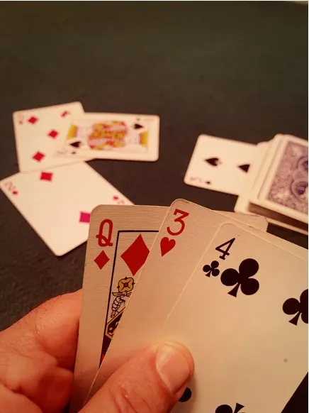

Afinal, como se joga o Truco Paulista?
Como jogar o Truco Paulista
O Truco Paulista é o mais comum nas jogatinas, tanto online quanto em competições. Utiliza-se um baralho com 40 cartas (excluem-se os 8, 9, 10 e os coringas), e o jogo é disputado entre duas duplas. Para entender como se joga o Truco Paulista, é importante saber que a distribuição das cartas é feita aleatoriamente, sem intervenção de jogadores ou membros da equipe. Cada participante recebe 3 cartas. O objetivo do jogo é marcar 12 pontos primeiro, por meio da "mão batida" — uma combinação de cartas que garante pelo menos um ponto por rodada, podendo aumentar conforme as apostas e estratégias das duplas. Cada mão é composta por até três rodadas. Em cada rodada, os jogadores usam suas 3 cartas, que são colocadas à mesa e comparadas com as dos adversários, com base na hierarquia do jogo. No final da rodada, a combinação com maior valor vence a mão.
Cartas do Truco Paulista:
As cartas são classificadas por seu valor dentro do jogo, e não pelo valor tradicional do baralho (que seria de Ás a Rei). No Truco Paulista, temos a seguinte ordem de cartas:
- Manilhas:(♣️, ♥️, ♠️, ♦️)
- 3 (♣️, ♥️, ♠️, ♦️)
- 2 (♣️, ♥️, ♠️, ♦️)
- A (♣️, ♥️, ♠️, ♦️)
- K (♣️, ♥️, ♠️, ♦️)
- Q (♣️, ♥️, ♠️, ♦️)
- J (♣️, ♥️, ♠️, ♦️)
- 7 (♣️, ♥️, ♠️, ♦️)
- 6 (♣️, ♥️, ♠️, ♦️)
- 5 (♣️, ♥️, ♠️, ♦️)
- 4 (♣️, ♥️, ♠️, ♦️)
Afinal, quais são as cartas mais fortes do truco paulista?
Lembrando que Manilha é a carta mais forte da partida, depois do 3, e dos naipes, sendo a carta inicial na qual o primeiro jogador vira para cima antes do jogo começar, chamada de “Vira”. Toda combinação que levar esta carta terá uma pontuação maior no somatório final da rodada. Ou seja, as cartas mais fortes do truco paulista mudam a cada rodada ao serem definidas pela vira.
Jogue com a mente, não só com as cartas: truco é jogo de leitura!
Truco é um jogo de truques, blefes e leitura: não jogue apenas suas cartas, jogue a mente do oponente.
- ♠️ Vira: a carta que o embaralhador vira quando distribui as cartas e que define as manilhas.
- ♠️ Rodada: os jogadores mostram uma carta, e a carta mais forte ganha a rodada.
- ♠️ Mão: vale 1 ponto e pode ter seu valor aumentado para 3, 6, 9 e 12 pontos, disputada em melhor de 3 rodadas.
- ♠️ Partida: vale 12 pontos através das “mãos”.
- ♠️ Truco: pedido de “aumento de aposta” que só pode ser feito na vez de cada jogador.
- Seis (6 pontos): aumento feito depois do "Truco".
- Nove (9 pontos): feito após o "Seis".
- Doze (12 pontos): o maior valor, feito depois do "Nove".
- ♠️ Mão de Onze: dupla que consegue chegar a 11 pontos na partida e que tem o direito de olhar as cartas um do outro e analisar se irão ou não aceitar a partida.
- ♠️ Mão de Ferro: Mão de Onze especial, quando as 2 duplas conseguem chegar a 11 pontos na partida.
- ♠️ Esconder Carta: no momento em que o jogador joga a carta virada para a mesa, e ela acaba por não valer nada. Lembrando que não é possível esconder a carta na primeira rodada de cada mão.
Top 4 truques para se dar bem no truco paulista!
Você conhecer as regras do truco é encessial para aplicar a dicas abaixo.
- O truco é um jogo de leitura, não só de cartas. Se você tiver um truco de peito, pode meter o “truco” na hora certa, mesmo com uma mão fraca. Às vezes, um blefe bem dado pode assustar o adversário e fazer você ganhar uma rodada sem precisar de cartas fortes!
- A psicologia é tudo no truco. Mantenha a calma, mesmo quando você estiver perdendo, e observe as reações dos adversários. Às vezes, um olhar ou um gesto pode ser mais revelador do que qualquer carta. Não tenha medo de “gritar” e meter um truco do nada. Pode pegar o oponente de surpresa!
- Truco paulista é um jogo de dupla, então é essencial saber como jogar em sintonia com seu parceiro. Se você perceber que seu amigo está com uma mão forte, jogue de maneira a proteger e ajudar ele. Se estiver com uma mão fraca, tente disfarçar e fazer o adversário atacar seu parceiro, não você.
- Conhecer a hierarquia das cartas é fundamental, mas entender quando jogar cada carta no momento certo é o que define o jogo. Não basta só jogar o zap ou a espada de ouro. Se você souber quando conquistar uma mão sem pressa, pode surpreender os adversários na rodada final. Às vezes, a carta mais baixa é a chave para virar o jogo!
Como desempatar uma partida
Descubra agora como funciona o desempate no Truco Paulista e como resolver empates na partida!
- Primeira rodada: Se empatar, quem ganhar a segunda rodada vence a mão.
- Segunda rodada: Se empatar, quem ganhar a primeira rodada vence a mão.
- Primeira e segunda rodada: Se empatar, ganha quem ganhar a terceira rodada
- Terceira rodada: Se empatar, quem ganhou a primeira rodada vence a mão.
- Três empates: Se todas as rodadas empatarem, ninguém ganha pontos.
Você sabe a diferença do truco paulista para o truco mineiro?
Uma das principais diferenças é que no truco mineiro as manilhas são fixas em vez de serem definidas pela vira a cada rodada.
A ordem crescente é:
- ♦️ 7 de Ouros
- ♠️ A de Espadas
- ♥️ 7 de Copas
- ♣️ 4 de Paus Famoso Zap